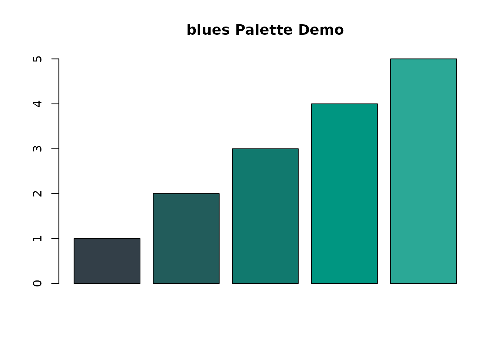
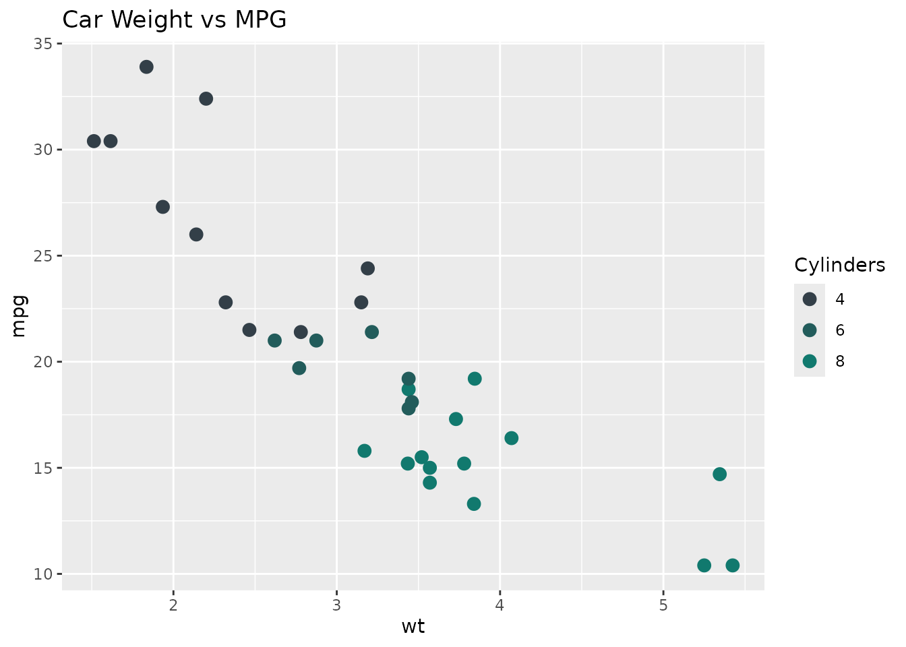
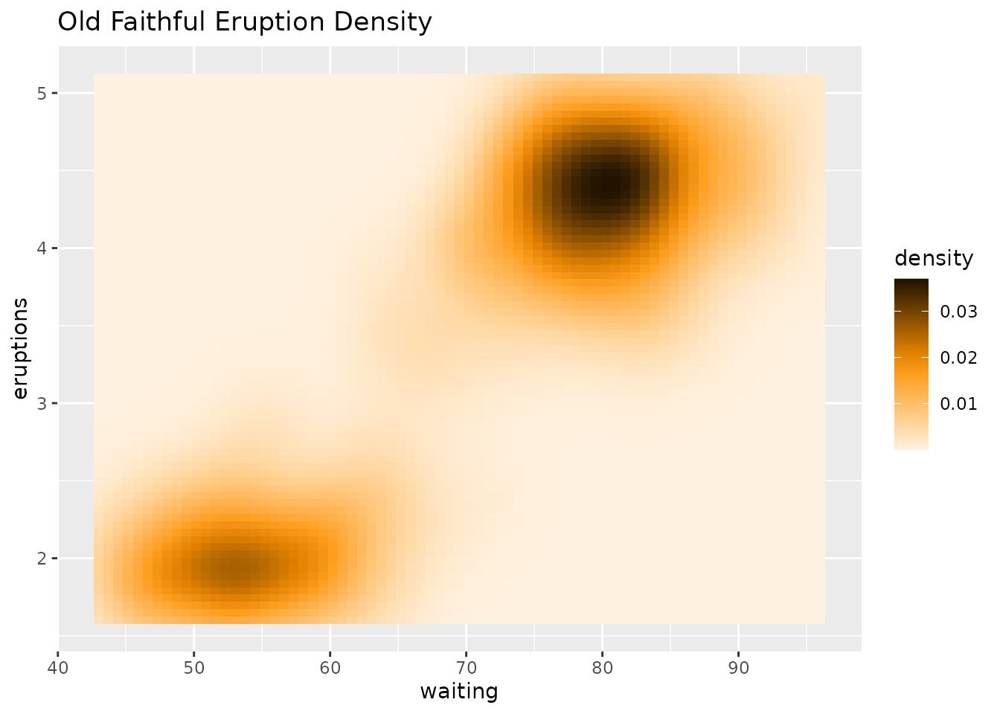
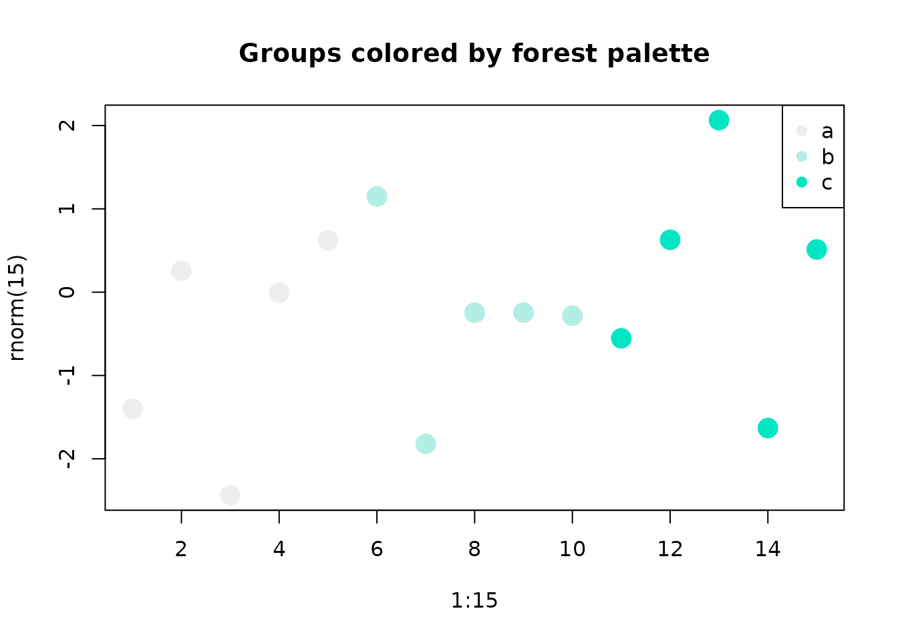

Overview
The qipalette package provides a collection of color
palettes for data visualization in R, inspired by the branding colors of
the Quadram Institute Bioscience. This vignette demonstrates how to use
the package functions and apply the palettes to your visualizations.
Basic Usage
Getting Colors from a Palette
You can extract colors from a palette using the
get_palette() function:
# Get the default number of colors
sunset_colors <- get_palette("qicolors")
sunset_colors
#> [1] "#009681" "#B5BD00" "#333F48" "#CF4520" "#48A23F" "#FF9E1B" "#00778B"
# Get a specific number of colors
sunset_colors_8 <- get_palette("sunset", n = 8)
sunset_colors_8
#> [1] "#fff1df" "#ffd69f" "#ffbb60" "#ffa020" "#df8000" "#9f5c00" "#603700"
#> [8] "#201200"
# Reverse the palette
sunset_colors_rev <- get_palette("sunset", reverse = TRUE)
sunset_colors_rev
#> [1] "#201200" "#603700" "#9f5c00" "#df8000" "#ffa020" "#ffbb60" "#ffd69f"
#> [8] "#fff1df"Using with Base R Graphics
The palettes can be easily used with base R graphics:
# Scatter plot with colors by group
plot(1:5, 1:5, col = get_palette("qicolors", 5), pch = 19, cex = 3,
main = "qicolors Palette Demo", xlab = "X", ylab = "Y")
# Bar plot
barplot(1:5, col = get_palette("blues"), main = "blues Palette Demo")
# Pie chart
pie(rep(1, 5), col = get_palette("forest"), main = "forest Palette Demo")
Integration with ggplot2
The package includes functions for easy integration with ggplot2:
library(ggplot2)
# Scatter plot with discrete color scale
ggplot(mtcars, aes(wt, mpg, color = factor(cyl))) +
geom_point(size = 3) +
scale_color_palette("blues") +
labs(title = "Car Weight vs MPG", color = "Cylinders")
# Bar plot with fill scale
ggplot(data.frame(x = letters[1:5], y = 1:5), aes(x, y, fill = x)) +
geom_col() +
scale_fill_palette("qicolors") +
labs(title = "Sample Bar Chart", fill = "Category")Advanced Usage
Continuous Color Scales
For continuous variables, you can set
discrete = FALSE:
ggplot(faithfuld, aes(waiting, eruptions, fill = density)) +
geom_tile() +
scale_fill_palette("sunset", discrete = FALSE) +
labs(title = "Old Faithful Eruption Density")
Custom Plotting Function
You can use the palette_color() function for flexible
coloring based on categories:
# Create a factor variable
groups <- factor(rep(letters[1:3], each = 5))
# Plot with palette_color
plot(1:15, rnorm(15), col = palette_color("forest")(groups), pch = 19, cex = 2,
main = "Groups colored by forest palette")
legend("topright", legend = levels(groups),
col = get_palette("forest", 3), pch = 19)